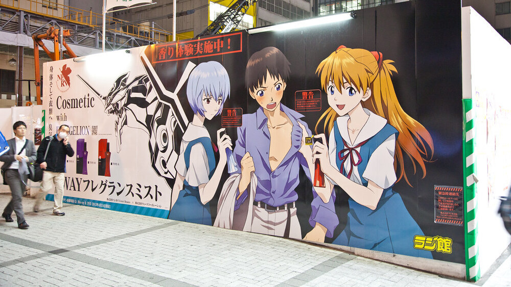

About Me
My name is Tanmoy Debnath. I am 18 years old and a student of Computer Science in University College Cork. I was born and raised in Tralee with my parents and two younger siblings. I attended primary school at Moyderwell Mercy Primary School and secondary school at Mercy Secondary School, Mounthawk.
My parents were born in Bangladesh which is in South Asia. Despite being born in Ireland and growing up with Irish culture, some part of me always brings me back to my roots. I've been to Bangladesh about 6 times, and every time i've been there i've experienced something new or gained new insight into life. Bangladesh also happens to be the 6th most densely populated country in the world with a population of 164,700,000 (Source: World Bank).


In terms of future goals i'd like to be a software engineer and possibly move to the US or Canada. Since I was young, it was always my dream to move to the States. I believe that the movies and tv shows I watched as a kid may have played a big part as to why I want to move there.
Hobbies & Interests
Football
My Favourite Team: FC Barcelona
My father grew up supporting this team so that led me to support this club. One of the most influential and popular football clubs in the world, Barcelona continues to gather fans and create 'magic' on the pitch. While my father grew up watching the likes of Maradona for me it was players such as Messi, Iniesta, Ronaldinho and more recently Suarez and Neymar that made me love this club. While nowadays Barcelona are struggling to win the league and having a poor track record in the 'Champions League' since 2015, the club still managed to create moments that have become special memories to me. I cannot appreciate this club enough.
| Players | Club(s) Played For | Career Goals |
| Lionel Messi | FC Barcelona (2003-2021)
Paris Saint-Germain (2021-present) |
769 |
| Cristiano Ronaldo | Sporting CP (2002-2003)
Manchester United (2003-2009) Real Madrid (2009-2019) Juventus (2019-2021) Manchester United (2021-present) |
801 |
| Luis Suarez | Ajax (2007-2011) Liverpool (2011-2014) FC Barcelona (2014-2020) Athletico Madrid (2020-present) |
495 |
| Neymar Jr | Santos (2009-2013)
FC Barcelona (2013-2017) Paris Saint-Germain (2017-present) |
335 |
| Serigo Aguero | Athletico Madrid (2006-2011)
Manchester City (2011-2021) FC Barcelona (2021-present) |
420 |
| Robert Lewandowski | Borussia Dortmund (2010-2014)
Bayern Munich (2014-present) |
558 |
| Sergio Ramos | Sevilla (2004-2005)
Real Madrid (2005-2021) Paris Saint-Germain (2021-present) |
129 |
Anime
For those who might not know what anime is, it is a style of japanese film and TV animation.
I was introduced to anime from a young age, from the likes of One Piece to Dragon Ball.
I've consumed more than 300 anime (sad, I know) but it was one of the first ones I watched that
really moved me.
That anime was:
Neon Genesis Evangelion
This anime is possible Japan's version of Star Wars in terms of pop culture.
From the very first episode this show hooked me, and kept me intrigued till the very end.
Being quite an old anime some people tend to stay away from it in fear of outdated animation
or predictable plots. However this is rather quite the opposite in fact. The animation stands
the test of time and radiates an indescribable nostalgic element to it. And the plot remains to
this day one of the most complex narratives in modern art. A truly beautiful show that I personally
recommend to everyone reading this right now.

Music
Music is something that allows me to escape from whatever's happening at that moment.
Here i'd like to speak about my favourite artist:
Kanye West
Perhaps the most influential artist of the past decade. At this moment nobody can touch Kanye West.
Multi-billionaire Music and Fashion industry giant, 'Ye' is leaps and bounds ahead of his peers
and continues to reinvent music. Kanye made it cool for rap and R&B artists to be open and emotional on their records.
My favourite song from him is "Devil in a new dress" from his most critically acclaimed album "My Beautiful Dark Twisted Fantasy".
Kanye did his thing and rapped over what I feel is the bestinstrumental of all time.
Rick Ross also dropped the best verse of his career after Kanye made him rewrite it multiple
times as it 'just wasn't good enough'. Kanye's obsession with perfection in everything he does has lead him to where he is now.
And he will only become more influential and inspiring.
My ranking of Kanye West's albums:
- The Life of Pablo
- My Beautiful Dark Twisted Fantasy
- Yeezus
- Graduation
- The College Dropout
- Kids See Ghosts
- The Late Registration
- Donda
- Ye
- 808's & Heartbreaks
- Watch the Throne
- Jesus is King

Twitter: Tanmoy17794762 Discord: 2tan_#4533